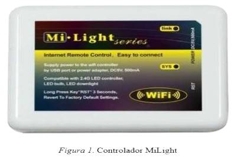
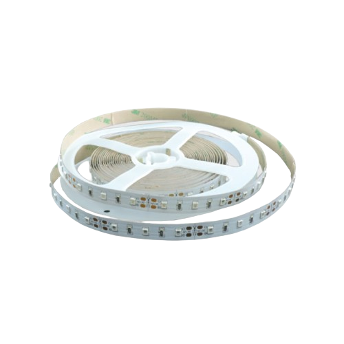
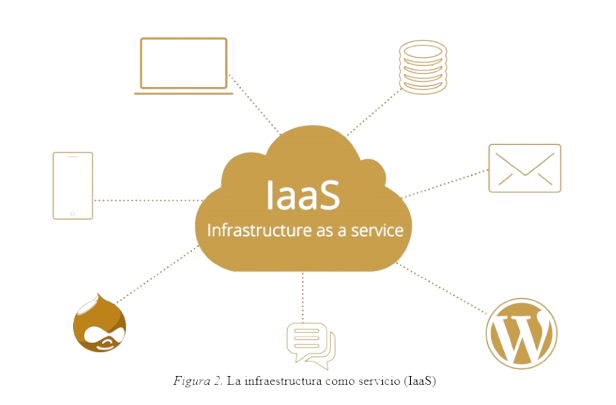

Mi Light
Las tiras de iluminación LED de Milight pueden ser controladas a distancia mediante un mando o una aplicación desde el teléfono. Solo necesitas instalar las tiras, conectar un controlador a cada una, vincularlo por wifi y descargar la aplicación. Esta versatilidad permite encender las luces de forma personalizada usando un dispositivo móvil o un mando a distancia.
Codigo QR

El codigo QR sera utilizado para encender las/la luz led en la butaca que le corresponde al cliente. Antes de ingresar a la sala, escaneara el codigo QR que le sera dado con la compra de la entrada.
Tiras LED
Las tiras LED, dado su versatilidad y bajo consumo, es una excelente opcion para nuestro proyecto.
¿Que ahorro supone?
IaaS - Infraestructura como Servicio
La utilización de este servicio es para guardar todos los datos, el hardware que se va a utilizar, reducir los costes por la cantidad de almacenamiento y tener todo en un mismo lugar.